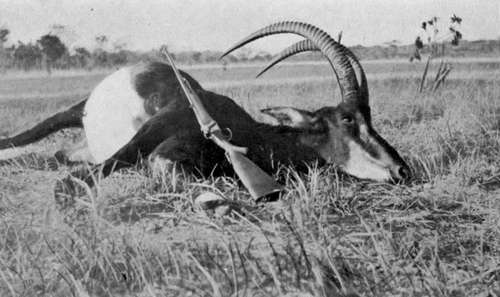

Hunting Elephant And Other Game. Part 6
Description
This section is from the book "Wild Life In Central Africa", by Denis D. Lyell. Also available from Amazon: Wild Life in Central Africa.
Hunting Elephant And Other Game. Part 6
Many is the shot at game one will get while tramping along these native footpaths, especially if there early in the morning or late in the evening, when the game has not retired to lie up, or when it again gets on the move as the heat of midday decreases.
On the evening of September 21 I went out and saw a lot of game, including a large herd of kudu. They were some way off when I first noticed them, but the ground was covered with many anthills, so, with a good deal of crawling, I got to within shooting range and loosed off at the only bull I saw. As the bush was very thick where the kudus were standing, I could not see the horns of the male well. Anyhow, my bullet told, and the stricken animal ran a short way and stopped to look back, when a second bullet dropped him.
As it was too late to skin and cut up the game, I covered him with grass, and before I left I tied my handkerchief to a bush close to the carcass. Early next morning the men I sent for the meat found that no carnivorous animal had interfered with it during the night.
I was trying to sleep about 9 p.m., although the smell of the pile of dead elephant was fearfully strong when the wind veered round, when I heard people shouting in the distance. This was Yakobo and my carriers returned with about fifty women to Carry the meat. Most of them had babies, and the row was deafening, but I told my cook to give them a lot of the meat, and I felt rather sorry they could not eat it all up, for the stench was absolutely sickening.
I managed to get asleep about midnight, but was awakened several times during the night by the loud chattering and the cries of infants, who, being too young to fill up on "high" elephant, were doubtless kept from their usual nourishment by the mothers, who were busy chewing elephant meat. When natives feed the working of their teeth can be heard at some distance, and in the intervals they chatter like monkeys, so it was not what might be called a peaceful night for me.
I got a lot of the meat away early, and sent men out at earliest dawn to bring in the kudu meat, and by 9 a.m. they had got back to the village.
After presenting the headman with a lot of meat I started off and reached my home on the Bua River at 1 o'clock; and this was pretty quick work for the eighteen miles of rough country that lay between.
When I got the elephant meat on the stands with big fires underneath, the maggots had a lively time.
I remarked to Yakobo, my cook, that surely the natives would refuse to eat such meat, but he said that many of them rather liked it with plenty of maggots in it. Personally, though I can stand a good deal in the way of strong meat aromas, it nearly made me sick to get a whiff of it or even to look at it.
I felt very sorry for the young infants, whom the mothers carry in a cloth or skin on their backs, for the drip, drip from these baskets right on the heads of the children must have been almost too much for such tender specimens of humanity; at least, 1 thought so, but on my remarking this to the women they only smiled and said it was chabe (nothing).
I had promised each porter half the contents of her basket, so they were quite pleased and happy. They would willingly have walked twice as far for the same amount of their beloved nyama. In Africa meat does not keep fresh for a week or more, as it does in Britain, and a day or so is enough to make it too high for the European's use. When well cooked it lasts a bit longer, but four or five days is as much as it will stand, even in June and July when the nights are quite chilly.
On October 3 I went off for another shoot to Maponda's village, as I had heard that the elephants were back again to that locality. However, I might have saved myself the trouble, for I could find no recent elephant spoor, as the animals were evidently still suffering from fright.
On the 4th I walked a long distance and came on a large herd of sable antelopes. Most of them were feeding in some fairly long grass, though a few were lying down. With some difficulty I got to within shooting distance, and from the back of an anthill I was able to watch these splendid animals for some time. This herd consisted of quite twenty-five head, and the only bull I could see was in the worst position for a shot, as is often the case. He was not a very large animal, and I thought there might be another bull somewhere about. I needed the meat for myself and the men, so I fired at a cow which was lying down and which presented a good shot. I may say that, unless a lying animal shows up fairly well, it is usually a mistake to fire at one in this position, although there is the advantage of knowing the game will not likely move when one is aiming, as a standing beast will often do. The sable got the bullet and half rolled over with the shock, but recovered herself and jumped up and bolted. I knew she was as good as dead, as I was steady, so I looked round for the bull I supposed to be about.
Sure enough, he appeared from behind a large anthill covered with long grass, and I fired a shot at him and heard the bullet strike, but he went off strongly.
Sable Bull Shot In North-Eastern Rhodesia (Horns over 40in., curve.)
I then took the spoor and soon found the body of the cow, and I was looking round to see if the bull was visible, when I heard two coughing grunts and then saw a sable running. Thinking it was the bull, I threw up my rifle and fired, and the sable fell as the bullet took it just under the tail. On walking up to it I found that I had shot another cow. The grunts I had heard were certainly made by the bull, as I never heard a cow sable make these hoarse sounds, and I think the cow had joined him, and that he was probably lying down, and had gone off in a different direction, which I did not notice, as my attention was taken up with the bolting cow.
Continue to:
- prev: Hunting Elephant And Other Game. Part 5
- Table of Contents
- next: Hunting Elephant And Other Game. Part 7